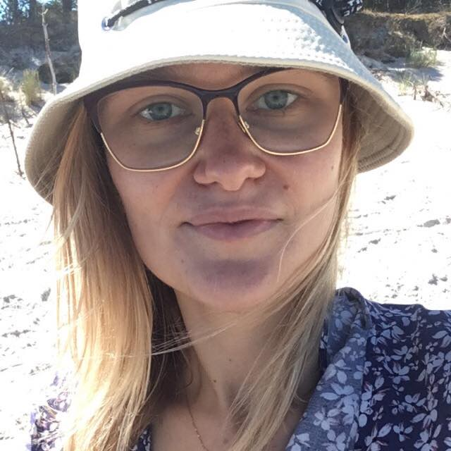
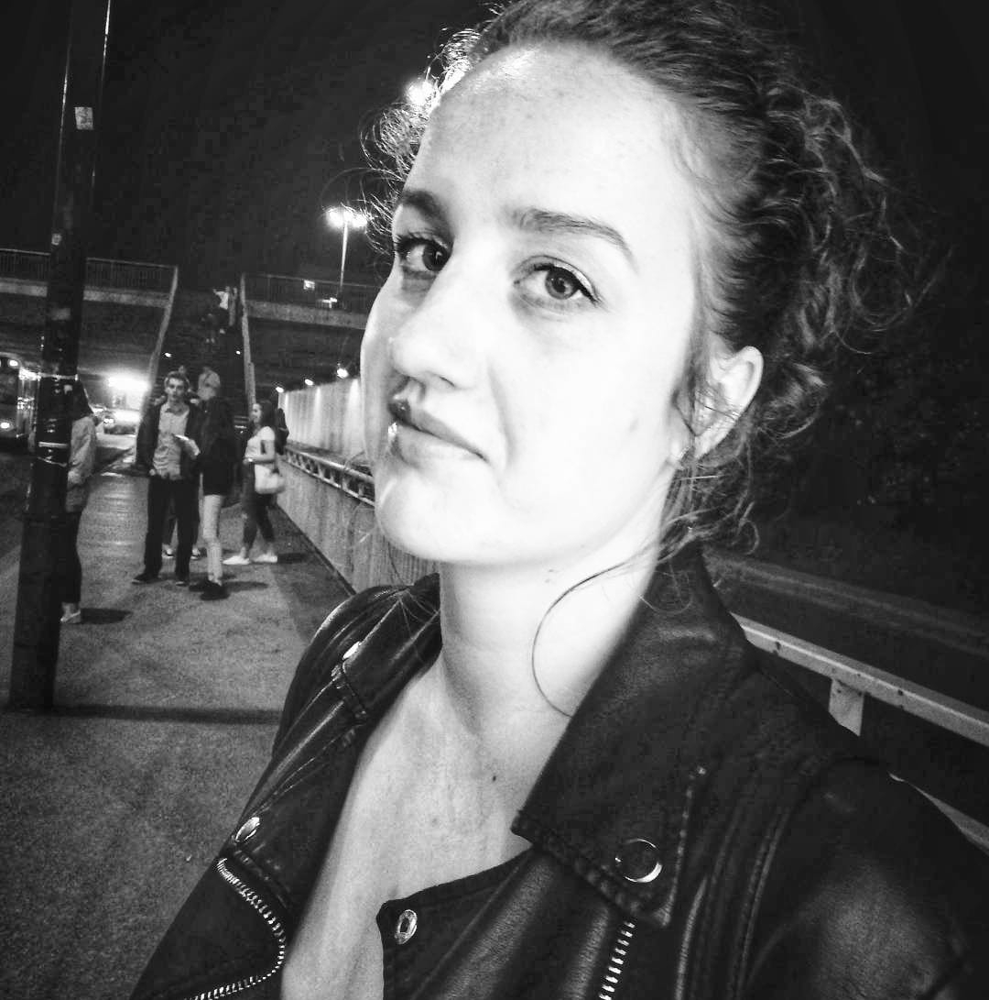

Członkowie

Paulina vel. Paulinson Biernack - Jedna z głównych pomysłodawczyń klubu. Samozwańczy prezes.
Organizatorka spotkań, dbająca o dobrą atmosferę. Taka klubowa Babcia.

Aleksandra vel. Nerka Zakrzewska - Jedna z głównych pomysłodawczyń klubu. Nie ma dla niej rzeczy
niemożliwych przeszczepiła by nawet nerkę o zerowym współczynniku filtracji. Jakby klubowa
Babcia miały by mieć Dziadka to właśnie Ole.
Marta vel. Majk Marcheffka Majkowska - Człowiek opozycja. Gdyby weszła do rządu pokazała by
teraźniejszej opozycji że rzetelnymi argumentami można zdziałać więcej. UWAGA!!!!!! Przekona cię
że “Duma i uprzedzenie” jest fajna.
Bartłomiej vel. Bieżnik Garbacz - Bo przyjęcie bez bieżnika to nie przyjęcie. Gustowny
młodzieniec o otwartej głowie z poczuciem humoru. Pasjonują go cmentarze i ozdabianie
stołów.

Kinga vel.(z racji tego że Marta ma tyle przezwisk to na Kingę nie starczyło) Mucha -
Osoba posiadająca ciekawe spostrzeżenia (nie lubi kwiatu jabłoni ← shame) Jakby Majka
miała tworzyć koalicję to właśnie z Kingą. Lubi ludzi z talentami do disiaj nie wiemy co
robi w naszych szeregach.
Gerard vel.(ta sama sytuacja co z Kingą DZIĘKI Majka) Jaworski - Tak on na prawde ma
tak na imię.